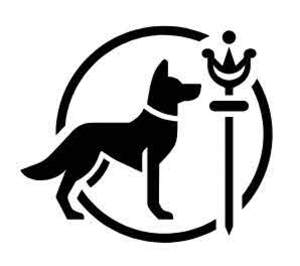

Trade Mark Journal No.2025/026 27 June 2025
UK00004213986 4 June 2025 (3,5,12,16,18,20,21,24,28,31,44)

- Class 3
- Pre-moistened cosmetic wipes; Baby wipes; Face wipes; Wipes impregnated with a skin cleanser; Eyeglass wipes impregnated with a detergent; Disposable wipes impregnated with cleansing compounds for use on the face; Cologne impregnated disposable wipes; Moist wipes impregnated with a cosmetic lotion; Facial wipes impregnated with cosmetics; Baby wipes impregnated with cleaning preparations; Wipes impregnated with a cleaning preparation; Pre-moistened towelettes impregnated with a detergent for cleaning; Pre-moistened towelettes impregnated with dishwashing detergent; Pre-moistened cosmetic towelettes; Moist wipes for sanitary and cosmetic purposes; Wipes incorporating cleaning preparations; Cotton wool in the form of wipes for cosmetic use; Wiping cloth impregnated with a cleaning preparation for cleaning eye glasses; Pre-moistened cosmetic tissues; Refill packs for shampoo dispensers; Cloths impregnated with a skin cleanser; Cloths impregnated with a detergent for cleaning camera lenses; Refill packs for hand soap dispensers; Moist paper hand towels impregnated with a cosmetic lotion; Cloths impregnated with a detergent for cleaning; Feminine hygiene cleansing towelettes; Refill packs for shower gel dispensers; Refill packs for body cleansing product dispensers; Cleaning pads impregnated with cosmetics; Toilet cleaning gels; Refill packs for hair fixer dispensers; Refill packs for cosmetics dispensers; Vaginal washes for personal sanitary or deodorant purposes; Non-medicated mouth washes; Tissues impregnated with a skin cleanser; Facial washes; Cotton swabs impregnated with make-up removing preparations; Impregnated cleaning pads impregnated with cosmetics; Impregnated cloths for cosmetic use; Face wash [cosmetic]; Impregnated cleaning pads impregnated with toilet preparations; Pet shampoos.
- Class 5
- Sanitizing wipes; Sanitising wipes; Antibacterial wipes; Disposable sanitizing wipes; Disposable sanitising wipes; Impregnated antiseptic wipes; Impregnated medicated wipes; Moist wipes impregnated with a pharmaceutical lotion; Wipes for medical use; Wipes impregnated with disinfectants for hygiene purposes; Anti-bacterial face washes (Medicated -); Cloth diapers; Washes (disinfectant -) [other than soap]; Washes (Sterilizing -); Alcohol-based antibacterial skin sanitizer gels; Disposable diapers; Disposable baby diapers; Nappies as baby diapers; Disposable liners for incontinence diapers; Diaper changing mats, disposable, for babies; Disinfectant swabs; Disposable nappies; Moist paper hand towels impregnated with a pharmaceutical lotion; Disposable diapers for incontinence; Disposable paper diapers; Cleaning cloths impregnated with disinfectant for hygiene purposes; Disposable diapers of paper for babies; Disposable pet diapers; Disposable nappy liners; Medicated nappy rash lotions; Disposable diapers of cellulose for babies; Diaper liners; Nappy changing mats, disposable, for babies; Baby diapers; Urinal screen mats impregnated with sanitizing and deodorizing preparations; Absorbent diapers of paper for pets; Paper liners for diapers; Vaginal washes; Disposable training pants [diapers]; Babies' napkins [diapers]; Diapers [babies' napkins]; Babies' diapers [napkins]; Napkins (Babies' -) [diapers]; Disposable liners for babies' diapers; Disposable nappies made of paper for babies; Disposable napkins of cellulose for babies; Disposable absorbent pads for lining pet crates; Paper diapers; Diapers for pets; Dietary pet supplements in the form of pet treats; Sanitary pants for pets; Anti-flea collars for pets; Deodorants for clothing; Attractants for pet animals.
- Class 12
- Pet strollers; Pet safety seats for use in vehicles; Equipment trailers.
- Class 16
- Paper wipes; Cellulose wipes; Paper wipes for cleaning; Paper pads for changing diapers; Plastic bags for disposable diapers; Plastic disposable diaper bags.
- Class 18
- Pet clothing; Clothing for pets; Pets (Clothing for -); Dog clothing; Clothing for dogs; Clothing for domestic pets; Garments for pets; Clothing for animals; Dog apparel; Raincoats for pet dogs; Animal apparel; Clothes for animals; Electronic pet collars; Pet hair bows; Bags for sports clothing; Pet leads; Dog leads; Animal leads; Lead reins; Leads for animals; Dog leashes; Animal leashes; Collars for pets.
- Class 20
- Pet furniture; Pet crates; Pet houses; Pet grooming tables; Pet cushions; Cushions (Pet -); Kennels for household pets; Barrels (Non-metallic -) for the identification of pet animals.
- Class 21
- Dispensers for paper wipes [other than fixed]; Dispensers for cellulose wipes, for household use; Wiping cloth for wiping eye glasses; Cloths for wiping glasses; Cloths for wiping eyeglasses; Cloths for wiping spectacles; Cloths for wiping optical lenses; Microfiber cloths for cleaning; Fitted dispensers for wiping, drying, polishing and cleaning paper; Mopping brushes; Scrubbing pads; Mops; Fitted holders for wiping, drying, polishing and cleaning paper; Rag mops; Cloths for cleaning; Cleaning cloths; Scrubbing brushes; Fitted racks for wiping, drying, polishing and cleaning paper; Facial cleansing sponges; Scrub sponges; Facial buffing pads; Abrasive sponges for scrubbing the skin; Skin (Abrasive sponges for scrubbing the -); Rags [cloth] for cleaning; Cleaning (Rags [cloth] for -); Pads for cleaning; Cleaning pads; Shampoo brushes; Brushes with detergent containers; Diaper pails; Bottle cleaning brushes; Shampoo dispensers; Skin cleansing brushes; Pet grooming glove; Food containers for pet animals; Brushes for grooming pet animals; Articles for the care of clothing and footwear; Household containers for storing pet food; Animal grooming gloves; Pet feeding dishes; Pets (Cages for household -); Cages for household pets; Litter trays for pet animals; Electronic pet feeders; Pet paw cleaners, non-electric; Non-mechanized pet waterers in the nature of portable water and fluid dispensers for pets.
- Class 24
- Blankets for household pets.
- Class 28
- Pet toys; Toys for pet animals; Doll clothing; Clothing for dolls; Toys and playthings for pet animals; Articles of clothing for toys; Toys for pets; Pet toys made of rope; Dog toys; Toys for domestic pets; Dolls' clothing accessories; Toys, games and playthings for pet animals; Sports equipment for pets; Fencing equipment; Swimming equipment; Billiard equipment; Sports equipment; Fishing equipment; Sleds [recreational equipment].
- Class 31
- Pet food; Food (Pet -); Pet foodstuffs; Pet food for dogs; Pet rabbit food; Pet foods; Foodstuffs for pet animals; Pet beverages; Pet animals; Pet food for birds; Dog food; Cat food.
- Class 44
- Pet grooming; Grooming (Pet -); Care of pet animals; Pet bathing services; Grooming salon services for pet animals; Grooming of pets; Pet grooming services; Services for the care of pet animals; Animal grooming; Grooming (Animal -); Services for the care of pet fish.
HOUND & SCEPTRE LTD